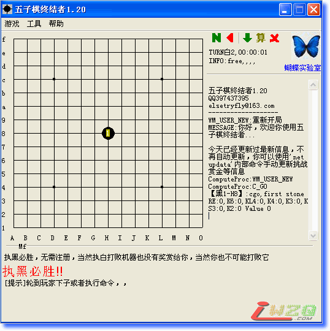
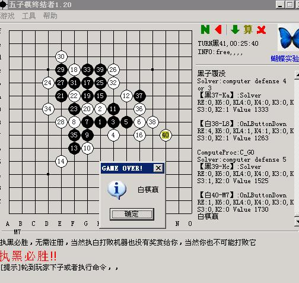

最新版本终结者——五子棋终结者1.20
#1 最新版本终结者——五子棋终结者1.20作者：潇洒 发表时间：2008-6-27 8:56:36
点击下载：http://www.bf92.com/soft/five/five.htm
【软件介绍】
五子棋终结者是一个计算机执黑必胜的五子棋小程序，严格地、完全地毯式地终结了自由规则下的五子棋
五子棋终结者可以快速地终结各种指定棋局，
另，
请不要向我要源码，因为我不舍得公开绝妙的算法
请不要让我教你下棋或者喊我老师什么的，因为我不会下棋，也不喜欢下棋，而五子棋被终结是当初做通用求解器的一个意外
如果你执白打败了五子棋终结者请告诉我，
最新版本，高手们试试！真能赢的话发一张起扑过来！谢谢！
本站下载： FIVE.rar
FIVE.rar

［ 有志青年 于 2008-6-27 10:51:23 时奖励此帖[金币加 20 威望加1］
#2 Re:最新版本终结者——五子棋终结者1.20作者：十八 发表时间：2008-6-27 19:41:00
謝謝瀟灑的分享喔
可以馬上來挑戰看看
3q
#3 Re:最新版本终结者——五子棋终结者1.20作者：xr__ 发表时间：2008-6-29 0:36:52
挺弱的，云月它执黑走成这样了！

第7手就坏了
［ 有志青年 于 2008-6-29 6:20:49 时奖励此帖[金币加 20 威望加1］
［ 皮皮虾 于 2012-4-4 9:11:17 时花20金币送鲜花一朵］
#4 Re:最新版本终结者——五子棋终结者1.20作者：越狱行辕 发表时间：2008-7-1 8:15:27
可是 你自己见过它开《雨月》么？
#5 Re:最新版本终结者——五子棋终结者1.20作者：五子冰 发表时间：2008-7-9 18:06:07
不相信程序。#6 Re:最新版本终结者——五子棋终结者1.20作者：有鱼咱就乐 发表时间：2008-7-10 22:39:08
老走44 33的禁手#7 Re:最新版本终结者——五子棋终结者1.20作者：怪怪 发表时间：2008-7-13 15:27:45
老下禁`~~赢不过~~~
#8 Re:最新版本终结者——五子棋终结者1.20作者：刘华均 发表时间：2008-8-29 9:44:31
花月出现漏洞，已经被破了，我这有图#9 Re:最新版本终结者——五子棋终结者1.20作者：混凝土 发表时间：2008-9-23 22:32:38
呵呵，感觉这个软件不错，如果不走禁手的话，用悔棋的话让电脑执白也是个可以动动脑筋的对手，虽然比较小巧，不错，黑石实在是太慢了哦。预祝它越来越好，下棋的快乐不在胜负输赢，我感觉是在于自我运筹帷幄，推演变化，造局做子，此中佳趣，不易向外人道也……#10 Re:Re:最新版本终结者——五子棋终结者1.20作者：圣龙天使 发表时间：2008-10-24 16:39:53
引用：花月怎么破啊 见识见识
原文由 刘华均 发表于 2008-8-29 9:44:31 :
花月出现漏洞，已经被破了，我这有图
#11 Re:最新版本终结者——五子棋终结者1.20作者：wrwak 发表时间：2008-10-27 13:04:32
他只会花月普月
#12 Re:最新版本终结者——五子棋终结者1.20作者：找不着北 发表时间：2008-11-8 14:18:01
真的不错 我用它在网上砍了不少分！！！！！！#13 Re:最新版本终结者——五子棋终结者1.20作者：五星若连珠 发表时间：2008-12-28 23:44:32
五子棋终结者已经更新到1.22版了。这里弄个链接，方便大家下载、破解，有奖金的哦。http://www.bf92.com/soft/five/five.htm#14 Re:最新版本终结者——五子棋终结者1.20作者：岛主 发表时间：2009-2-22 0:06:26
不行这东西 还是喜欢黑石#15 Re:最新版本终结者——五子棋终结者1.20作者：江南新绿 发表时间：2009-2-22 8:53:35
弄什么破解。用renjusolver做个地毯，读下谱就可以了。#16 Re:Re:最新版本终结者——五子棋终结者1.20作者：江南新绿 发表时间：2009-2-22 9:02:30
=======上图对应的爱五子棋谱代码如下，以便你拆解：========
h8h11h6i10g7i9h7h9h5h4i5f8g5f5i7
======================================================
从图上看黑棋是无禁的，类似当年欢乐五子棋的。renjusolver（有禁）从前也有一个版本是关于花月，浦月的，而且还不是15*15 的。
平心而论，确实比欢乐五子棋强
#17 Re:最新版本终结者——五子棋终结者1.20作者：病维摩 发表时间：2009-4-5 17:17:29
这个软件怎么老刷新屏幕的？害我看的闪闪的。#18 Re:最新版本终结者——五子棋终结者1.20作者：小刚小英 发表时间：2009-8-5 17:24:58
的却厉害
但也不定执黑就必胜！
#19 Re:最新版本终结者——五子棋终结者1.20作者：gerbo 发表时间：2009-8-5 17:59:37
目前作者正在考虑开发类似黑石一样的局面分析软件，期待作者的好消息。同时个人感受，作为4.0正式版，个人感觉还是很有发展潜力的一款软件。#20 Re:最新版本终结者——五子棋终结者1.20作者：小刚小英 发表时间：2009-8-14 17:53:40
它开必胜局
杀不过
#21 Re:最新版本终结者——五子棋终结者1.20作者：天下孩子西西 发表时间：2009-10-22 3:58:37
前阵子我下赢了但不知道是不是最新版#22 Re:最新版本终结者——五子棋终结者1.20作者：像傻瓜一个的笨蛋 发表时间：2009-11-19 21:37:12
4楼你说的是真的吗？
我和它下了那么多盘，还没看它使用云月！
#23 Re:最新版本终结者——五子棋终结者1.20作者：翱翔的鱼 发表时间：2009-12-9 10:56:43
看来这软件还是一般一般#24 Re:最新版本终结者——五子棋终结者1.20作者：小千鸟 发表时间：2009-12-14 6:11:13
下不过...#25 Re:最新版本终结者——五子棋终结者1.20作者：如霜 发表时间：2010-10-27 18:31:02
请问为什么下载后系统总是提示含有木马啊。。郁闷。到底可以用不
#26 Re:最新版本终结者——五子棋终结者1.20作者：朗星 发表时间：2010-10-27 19:33:56
惭愧。。。我是软件白痴。。。#27 Re:最新版本终结者——五子棋终结者1.20作者：gerbo 发表时间：2010-10-30 0:53:51
这个软件我买了正式版，结果作者大人不更新了，后改为免费发布。N次中毒后，此软件彻底消失。 现经反复论证研究，激烈的心理冲突后：还有没有更高级的无禁软件啊，边角开局下的像黑石一样就可以了。以前喜欢下22星，现在喜欢下12位了，结果拜拜神了。#28 Re:最新版本终结者——五子棋终结者1.20作者：励 发表时间：2010-11-28 23:01:39
谁破花月了，，让我也见识识啊